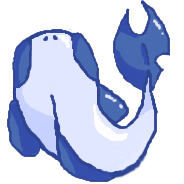
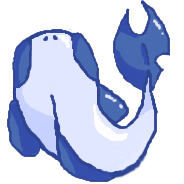
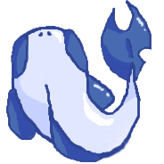

François, dit "Kurikawaii"
Administrateur, développeur & procrastinateur
"Être un développeur, c'est régler un problème en en créant un nouveau à la place" - Kurikawaii
Premièrement, Aqua est un regroupement de trois développeurs passionnées, qui développe des petits projets sans ambition, comme des petits jeux, des logiciels, des sites, des scritps...

François, dit "Kurikawaii"
Administrateur, développeur & procrastinateur
"Être un développeur, c'est régler un problème en en créant un nouveau à la place" - Kurikawaii